Nonoichi, Ishikawa: things to do, food and stays
Nonoichi · Ishikawa
Nonoichi
Highlighted on the Ishikawa map.
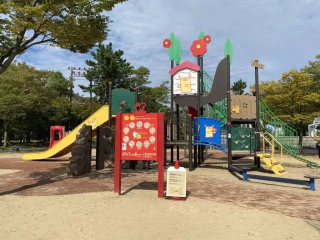
Stay
満天の湯・道の宿（マンテンホテルグループ）
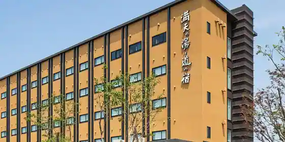
Manten No Yu Michi No Yado (Manten Hotel Gurupu)
Dining
すし処 めくみ
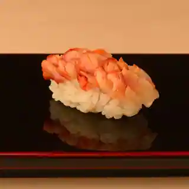
Sushi Tokoro Mekumi
ジョニーのビリヤニ
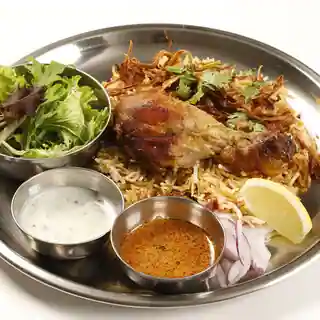
Joni No Biriyani
とんかつ専門店 かつ坊
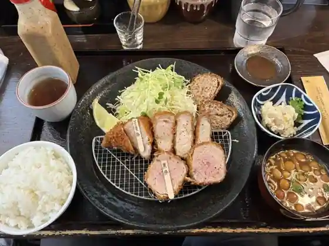
Tonkatsu Senmon Katsu Bo
マルガーラボ 野々市店
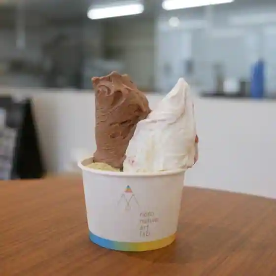
Marugarabo Nonoichi
自家製麺 TERRA
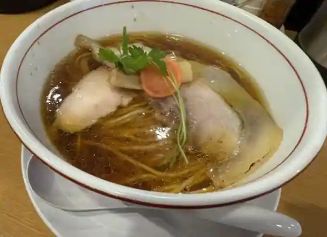
Jikasei Men TERRA
NiOR
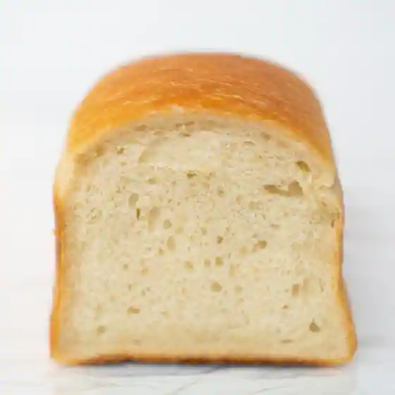
NiOR
ramen 雨燕
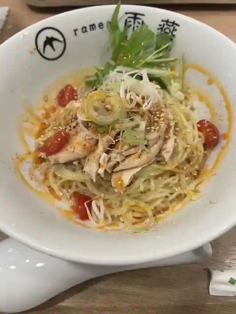
ramen Amatsubame
中華そば ブラボー
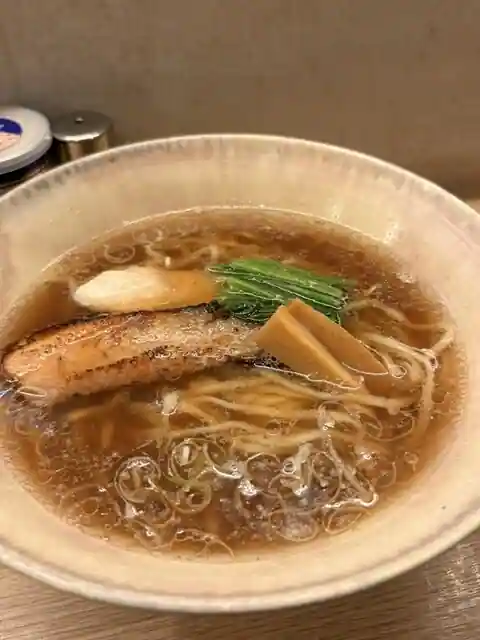
Chuka Soba Burabo
もりもり寿し 野々市本店
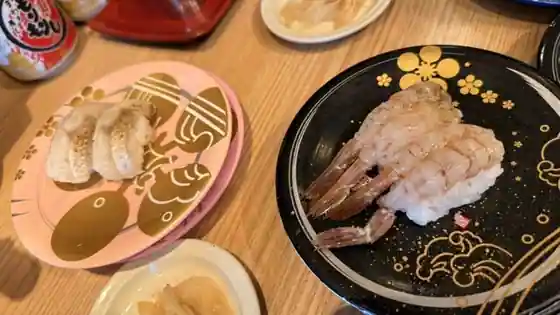
Morimori Hisashi Shi Nonoichi Hon
パティスリー・ショコラトリー サンニコラ
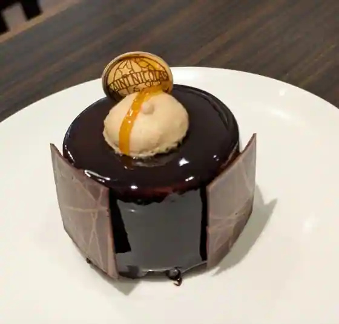
Pateisuri Shokoratori Sannikora
シエンブラン
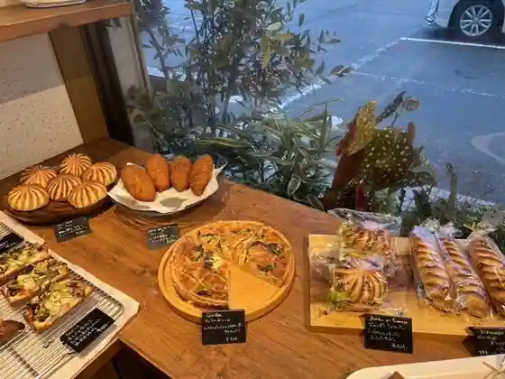
Shienburan
シェ クープル
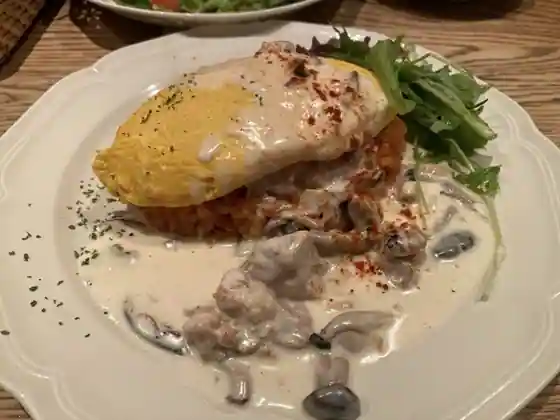
Shie Kupuru
カジャーナ
Kajana
敬蔵
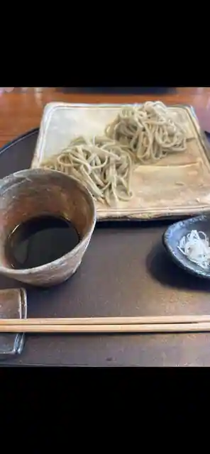
Keizo
鬍鬚張魯肉飯 金沢工大前店
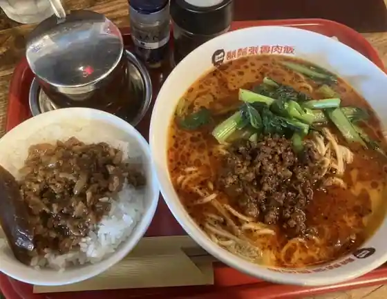
Choro Niku Meshi Kanazawakodai Mae
才谷屋
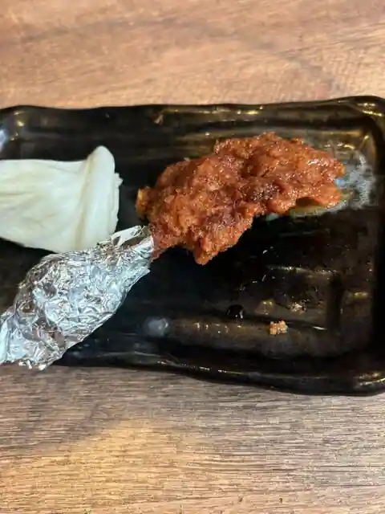
Saitani Ya
完熟うどん処 獅子家
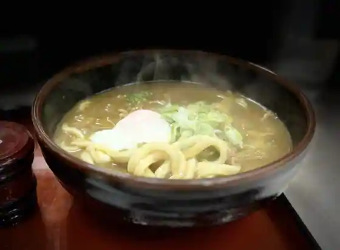
Kanjuku Udon Tokoro Shishi Ie
中華そば 吉吉飯店
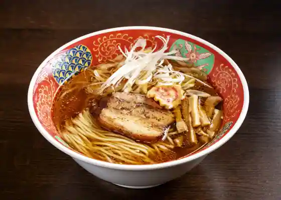
Chuka Soba Kichi Kichi Meshi
寿し龍
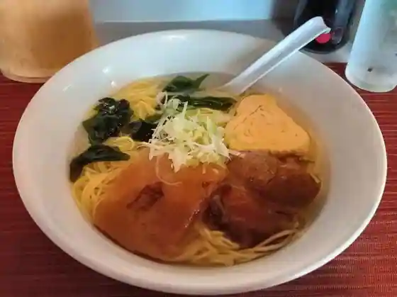
Hisashi Shi Ryu
そばと四季揚げ 八兆庵 野々市本町店
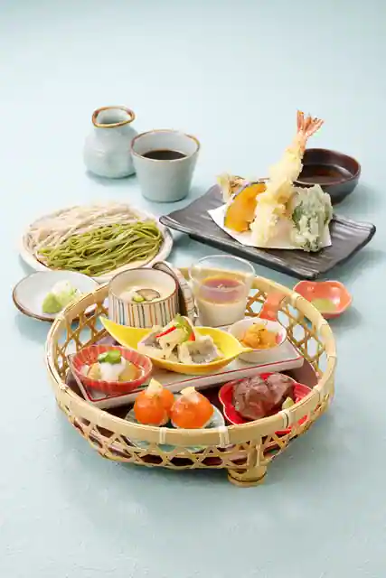
Sobato Shiki Age Hachi Cho Iori Nonoichi Honcho
イルガッビアーノ
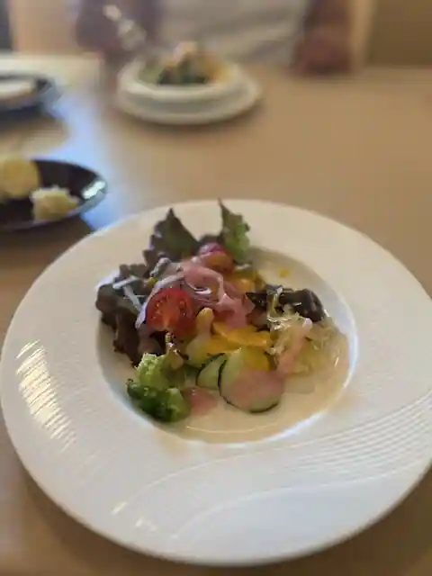
Irugabbiano
ななや
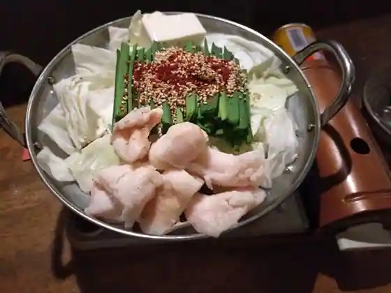
Nanaya
ナナマルカリー スパイスカレー専門店
Nanamarukari Supaisukare Senmon
牛鉄
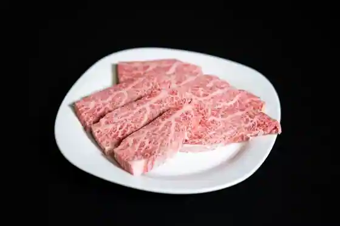
Ushi Tetsu
Sights
Juyo Bunkazai Kita Ie House
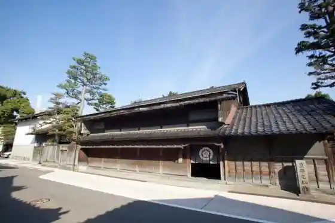
Nonoichi Chuo Park
Kuni Historic Site O Kyozuka Iseki
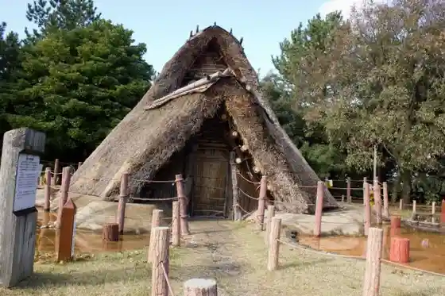
Ai to Wa Hana no Gyararii no no Ichi Tsubaki Kan & Tsubakiyama
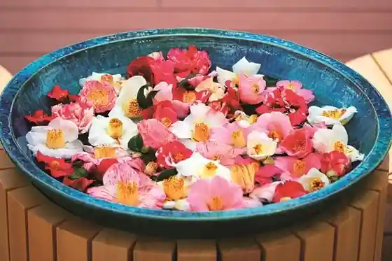
Nuno City Shrine
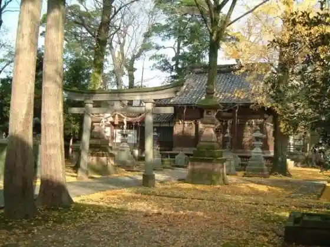
1 no 1 NONOICHI
Ishikawa Prefectural Daigaku
Manabi no Mori no no Ichi Karedo
Nonoichi Local History Museum NoNo
Kuni Historic Site Suematsu Haiji Ato
Nonoichi Yakusho